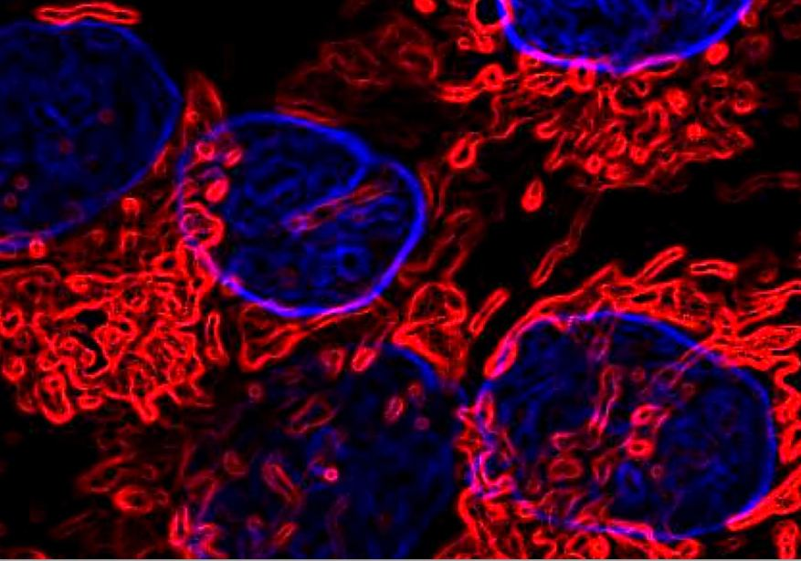

Cheap and Easy
A new cancer therapy?
Raymond Lai
Fall 2007

What if the cure for cancer is a small molecule that is unpatented,
well-tested, nontoxic, and cheap? In the January 2007 issue of Cancer
Cell, Evangelos Michelakis, MD, University of Alberta, and his
colleagues reported that dichloroacetate (DCA), normally used to treat
mitochondrial disorders of metabolism, inhibited tumor growth in a rat
model.
Due to physical constraints on the diffusibility of
oxygen, cancer cells are often located in hypoxic environments. Thus,
they rely solely on glycolysis, which does not require oxygen, to
supply their energy needs. Treatment with DCA indirectly activates an
enzyme called pyruvate dehydrogenase, which in turn forces the cells to
begin oxidative metabolism. Since the cancer cells are deprived of
oxygen, they will initiate a process of programmed cell death called
apoptosis, effectively committing suicide.
In Michelakis’s study, rats were first injected with
cells derived from a human lung cancer. After tumors had developed, the
mice drank either normal or DCA-laced water for five weeks. The
researchers noted a large reduction in tumor size in the group of mice
who had ingested DCA-laced water.
Clinically, DCA may have several benefits over
conventional cancer therapies. It can be administered orally, leaves
healthy cells unharmed, and causes no apparent systemic toxicity. DCA
would greatly reduce the number of side effects of chemotherapy, such
as hair loss, loss of appetite, fatigue, or nausea. Other cancer
treatments are more invasive and require significant recovery time even
after treatment because of the onset of many side effects. Since the
initiation of apoptosis under hypoxic conditions is a universal
phenomenon, the research group believes DCA-based treatments could have
broad applications for cancer treatment. In fact, DCA has been shown to
be effective in vitro and in rat models for breast cancer- and
glioblastoma-derived cells as well. Michelakis is currently planning to
establish clinical trials testing the effectiveness of DCA in patients
suffering from these cancers.
Furthermore, the researchers believe that even if
DCA is not the “miracle cure” for all cancers, DCA research can still
increase knowledge about targeting cancer cells with more specificity.
In fact, the researchers suggested using DCA in conjunction with low
doses of chemotherapy to increase the efficacy of treatment. “DCA is
effective on its own, but most of chemotherapy is not responsive to
apoptosis. DCA sensitizes cancer cells to apoptosis, allowing a lower
dosage of chemotherapy to be more effective and causing less toxicity,”
notes Michelakis. This combined treatment can improve a patient’s
quality of life.